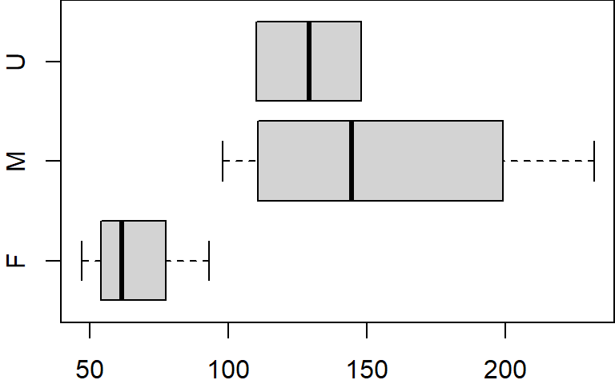
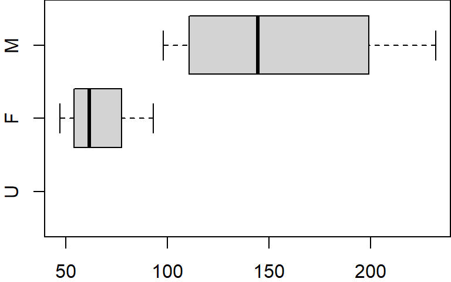
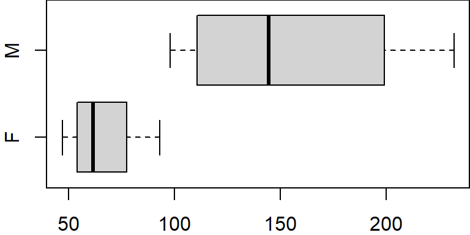

3 Data Object Type and Structure
| version | |
|---|---|
| R | 4.2.2 |
3.1 Core data types
These data types, or modes, define how the values are stored in the computer. You can get an object’s mode using the typeof() function. Note that R also has a built-in mode() function that will serve the same purpose with the one exception in that it will not distinguish integers from doubles.
3.1.1 Numeric
The numeric data type is probably the simplest. It consists of numbers such as integers (e.g. 1 ,-3 ,33 ,0) or doubles (e.g. 0.3, 12.4, -0.04, 1.0). For example, to create a numeric (double) vector we can type:
x <- c(1.0, -3.4, 2, 140.1)
mode(x)[1] "numeric"To assess if the number is stored as an integer or a double use the typeof() function.
typeof(x)[1] "double"Note that removing the fraction part of a number when creating a numeric object does not necessarily create an integer. For example, creating what seems to be an integer object returns double when queried by typeof():
x <- 4
typeof(x)[1] "double"To force R to recognize a value as an integer add an upper case L to the number.
x <- 4L
typeof(x)[1] "integer"3.1.2 Character
The character data type consists of letters or words such as "a", "f", "project", "house value".
x <- c("a", "f", "project", "house value")
typeof(x)[1] "character"Characters can also consist of numbers represented as characters. The distinction between a character representation of a number and a numeric one is important. For example, if we have two numeric vectors x and y such as
x <- 3
y <- 5.3and we choose to sum the two variables, we get:
x + y[1] 8.3If we repeat these steps but instead choose to represent the numbers 3 and 5.3 as characters we get the following error message:
x <- "3"
y <- "5.3"
x + yError in x + y: non-numeric argument to binary operatorNote the use of quotes to force numbers to character mode.
3.1.3 Logical
Logical values can take on one of two values: TRUE or FALSE. These can also be represented as 1 or 0. For example, to create a logical vector of 4 elements, you can type
x <- c(TRUE, FALSE, FALSE, TRUE)or
x <- as.logical(c(1,0,0,1))Note that in both cases, typeof(x) returns logical. Also note that the 1’s and 0’s in the last example are converted to TRUE’s and FALSE’s internally.
3.2 Naming R objects
You can use any combination of alphanumeric characters, along with dots and underscores, to name an R object. But there are a few exceptions:
- Names cannot start with a number;
- Names cannot have spaces;
- Names cannot be a standalone number such as
12or0.34; - Names cannot be a reserved word such as
if,else,function,TRUE,FALSEandNULLjust to name a few (to see the full list of reserved words, type?Reserved).
Examples of valid names include a, dat2, cpi_index, .tmp, and even a standalone dot . (though a dot can make reading code difficult under certain circumstances).
Examples of invalid names include 1dat, dat 2 (note the space between dat and 2), df-ver2 (the dash is treated as a mathematical operator), and Inf (the latter is a reserved word listed in the ?Reserved help document).
You can mix cases, but use upper cases with caution since some letters look very much the same in both lower and upper cases (e.g. s and S).
3.3 Derived data types
We’ve learned that data are stored as either numeric, character or logical, but they can carry additional attribute information that allow these objects to be treated in special ways by certain functions in R. These attributes define an object’s class and can be extracted from that object via the class() function.
3.3.1 Factor
Factors are normally used to group variables into a fixed number of unique categories or levels. For example, a dataset may be grouped by gender or month of the year. Such data are usually loaded into R as a numeric or character data type requiring that they be converted to a factor using the as.factor() function.
In the following chunk of code, we create a factor from a character object.
a <- c("M", "F", "F", "U", "F", "M", "M", "M", "F", "U")
a.fact <- as.factor(a)Note that a is of character data type.
typeof(a)[1] "character"However, the derived object a.fact is now stored as an integer!
typeof(a.fact)[1] "integer"Yet, when displaying the contents of a.fact we see character values.
a.fact [1] M F F U F M M M F U
Levels: F M UHow can this be? Well, a.fact is a more complicated object than the simple objects created thus far in that the factor is storing additional information not seen in its output. This hidden information is stored in attributes. To view these hidden attributes, use the attributes function.
attributes(a.fact)$levels
[1] "F" "M" "U"
$class
[1] "factor"There are two attributes: levels and class. The levels attribute lists the three unique values in a.fact. The order in which these levels are listed reflect their numeric representation. So in essence, a.fact is storing each value as an integer that points to one of the three unique levels.

So why doesn’t R output the integer values when we output a.fact? To understand why, we first need to know that when we call the object name, R is wrapping that object name with the print command, so the following lines of code are identical.
a.fact
print(a.fact)The print function then looks for a class attribute in the object. The class type instructs the print function on how to generate the output. Since a.fact has a factor class attribute, the print function is instructed to replace the integer values with the level “tags”.
Naturally, this all happens behind the scenes without user intervention.
Another way to determine a.fact’s class type is to call the class function.
class(a.fact)[1] "factor"The unique levels of a factor, and the order in which they are stored can be extracted using the levels function.
levels(a.fact)[1] "F" "M" "U"Remember, the order in which the levels are displayed match their integer representation.
Note that if a class attribute is not present, the class function will return the object’s data type (though it will not distinguish between integer and double).
class(a)[1] "character"In such a case, the object is treated as a generic element.
To appreciate the benefits of a factor we’ll first create a dataframe (dataframes are data tables whose structure will be covered later in this tutorial). One column will be assigned the a.fact factor and another will be assigned some random numeric values.
x <- c(166, 47, 61, 148, 62, 123, 232, 98, 93, 110)
dat <- data.frame(x = x, gender = a.fact)
dat x gender
1 166 M
2 47 F
3 61 F
4 148 U
5 62 F
6 123 M
7 232 M
8 98 M
9 93 F
10 110 UThe gender column is now a factor with three levels: F, M and U. We can use the str() function to view the dataframe’s structure as well as its columns classes.
str(dat)'data.frame': 10 obs. of 2 variables:
$ x : num 166 47 61 148 62 123 232 98 93 110
$ gender: Factor w/ 3 levels "F","M","U": 2 1 1 3 1 2 2 2 1 3Many functions other than print will recognize factor data types and will allow you to split the output into groups defined by the factor’s unique levels. For example, to create three boxplots of the value x, one for each gender group F, M and U, type the following:
boxplot(x ~ gender, dat, horizontal = TRUE)
The tilde ~ operator is used in the plot function to split (or condition) the data into separate plots based on the factor gender.
Factors will prove to be quite useful in many analytical and graphical procedures as we’ll see in subsequent sections.
3.3.1.1 Rearranging level order
A factor will define a hierarchy for its levels. When we invoked the levels function in the last example, you may have noted that the levels output were ordered F, M andU–this is the level hierarchy defined for gender (i.e. F>M>U ). This means that regardless of the order in which the factors appear in a table, anytime a plot or operation is conditioned by the factor, the grouped elements will appear in the order defined by the levels’ hierarchy. When we created the boxplot from our dat object, the plotting function ordered the boxplot (bottom to top) following gender’s level hierarchy (i.e. F first, then M, then U).
If we wanted the boxplots to be plotted in a different order (i.e. U first followed by F then M) we would need to modify the gender column by recreating the factor object as follows:
dat$gender <- factor(dat$gender, levels=c("U","F","M"))
str(dat)'data.frame': 10 obs. of 2 variables:
$ x : num 166 47 61 148 62 123 232 98 93 110
$ gender: Factor w/ 3 levels "U","F","M": 3 2 2 1 2 3 3 3 2 1The factor function is given the original factor values (dat$gender) but is also given the levels in the new order in which they are to appear(levels=c("U","F","M")). Now, if we recreate the boxplot, the plot order (plotted from bottom to top) will reflect the new level hierarchy.
boxplot(x ~ gender, dat, horizontal = TRUE)
3.3.1.2 Subsetting table by level and dropping levels
In this example, we can subset the table by level using the subset function. For example, to subset the values associated with F and M, type:
dat.f <- subset(dat, gender == "F" | gender == "M")
dat.f x gender
1 166 M
2 47 F
3 61 F
5 62 F
6 123 M
7 232 M
8 98 M
9 93 FThe double equality sign == differs from the single equality sign = in that the former asses a condition: it checks if the variable to the left of == equals the variable to the right.
However, if you display the levels associated with this new dataframe, you’ll still see the level U even though it no longer exists in the gender column.
levels(dat.f$gender)[1] "U" "F" "M"This can be a nuisance when plotting the data subset.
boxplot(x ~ gender, dat.f, horizontal = TRUE)
Even though no records are available for U, the plot function allocates a slot for that level. To resolve this, we can use the droplevels function to remove all unused levels.
dat.f$gender <- droplevels(dat.f$gender)
levels(dat.f$gender)[1] "F" "M"boxplot(x ~ gender, dat.f, horizontal = TRUE)
3.3.2 Date
Date values are stored as numbers. But to be properly interpreted as a date object in R, their attribute must be explicitly defined as a date. R provides many facilities to convert and manipulate dates and times, but a package called lubridate makes working with dates/times much easier. A separate section is dedicated to the creation and manipulation of date objects.
3.3.3 NA and NULL
You will find that many data files contain missing or unknown values. It may be tempting to assign these missing or unknown values a 0 but doing so can lead to many undesirable results when analyzing the data. R has two placeholders for such elements: NA and NULL.
For example, let’s say that we made four measurements where the second measurement was not available but we wanted that missing value to be recorded in our table, we would encode that missing value as follows:
x <- c(23, NA, 1.2, 5)NA (Not Available) is a missing value indicator. It suggests that a value should be present but is unknown.
The NULL object also represents missing values but its interpretation is slightly different in that it suggests that the value does not exist or that it’s not measurable.
y <- c(23, NULL, 1.2, 5)The difference between NA and NULL may seem subtle, but their interpretation in some functions can lead to different outcomes. For example, when computing the mean of x, R returns an NA value:
mean(x)[1] NAThis serves as a check to remind the user that one of the elements is missing. This can be overcome by setting the na.rm parameter to TRUE as in mean(x, na.rm=T) in which case R ignores the missing value.
A NULL object, on the other hand, is treated differently. Since NULL implies that a value should not be present, R no longer feels the need to treat such element as questionable and allows the mean value to be computed:
mean(y)[1] 9.733333It’s more common to find data tables with missing elements populated with NA’s than NULL’s so unless you have a specific reason to use NULL as a missing value placeholder, use NA instead.
3.3.3.1 NA data types
NA has different data types. By default, it’s a logical variable.
typeof(NA)[1] "logical"But it can be coerced to other types/classes such as character.
typeof( as.character(NA))[1] "character"It can also be coerced to a derived data type such as a date.
class( as.Date(NA))[1] "Date"Note the use of class instead of typeof (recall that a date object is stored as a number but has a Date class attribute).
Alternatively, you can make use of built-in reserved words such as NA_character_ and NA_integer_. Note that there is no reserved word for an NA date type.
typeof(NA_character_)[1] "character"typeof(NA_integer_)[1] "integer"The distinction between NA types can be important in certain settings. Examples of these will be highlighted in Week 03.
3.4 Data structures
Most datasets we work with consist of batches of values such as a table of temperature values or a list of survey results. These batches are stored in R in one of several data structures. These include (atomic) vectors, matrices, data frames and lists.

3.4.1 (Atomic) Vectors
The atomic vector (or vector for short) is the simplest data structure in R which consists of an ordered set of values of the same type and or class (e.g. numeric, character, date, etc…). A vector can be created using the combine function c() as in
x <- c(674 , 4186 , 5308 , 5083 , 6140 , 6381)
x[1] 674 4186 5308 5083 6140 6381A vector object is an indexable collection of values which allows one to access a specific index number. For example, to access the third element of x, type:
x[3][1] 5308You can also select a subset of elements by index values using the combine function c().
x[c(1,3,4)][1] 674 5308 5083Or, if you are interested in a range of indexed values such as index 2 through 4, use the : operator.
x[2:4][1] 4186 5308 5083You can also assign new values to a specific index. For example, we can replace the second value in vector x with 0.
x[2] <- 0
x[1] 674 0 5308 5083 6140 6381Note that a vector can store any data type such as characters.
x <- c("all", "b", "olive")
x[1] "all" "b" "olive"However, a vector can only be of one type. For example, you cannot mix numeric and character types as follows:
x <- c( 1.2, 5, "Rt", "2000")In such a situation, R will convert the element types to the highest common mode following the order NULL < logical < integer < double < character. In our working example, the elements are coerced to character:
typeof(x)[1] "character"3.4.2 Matrices and arrays
Matrices in R can be thought of as vectors indexed using two indices instead of one. For example, the following line of code creates a 3 by 3 matrix of randomly generated values. The parameters nrow and ncol define the matrix dimension and the function runif() generates the nine random numbers that populate this matrix.
m <- matrix(runif(9,0,10), nrow = 3, ncol = 3)
m [,1] [,2] [,3]
[1,] 6.432146 3.95568744 0.4775159
[2,] 5.129415 7.86956812 6.8602402
[3,] 4.428387 0.02690613 5.7419993If a higher dimension vector is desired, then use the array() function to generate the n-dimensional object. A 3x3x3 array can be created as follows:
m <- array(runif(27,0,10), c(3,3,3))
m, , 1
[,1] [,2] [,3]
[1,] 5.980109 5.879841 1.040604
[2,] 8.287531 1.535440 7.907427
[3,] 6.112140 5.325980 9.314898
, , 2
[,1] [,2] [,3]
[1,] 8.092936 0.6341535 3.262427
[2,] 8.306673 9.3903959 5.535109
[3,] 1.199712 8.9266883 5.653008
, , 3
[,1] [,2] [,3]
[1,] 1.453354 6.7173773 4.869986
[2,] 2.193595 3.5314945 9.318592
[3,] 7.511607 0.1554047 4.359003Matrices and arrays can store numeric or character data types, but they cannot store both. This is not to say that you can’t have a matrix of the kind
[,1] [,2]
[1,] "a" "2"
[2,] "b" "4" but the value 2 and 4 are no longer treated as numeric values but as character values instead.
3.4.3 Data frames
A data frame is what comes closest to our perception of a traditional data table. Unlike a matrix, a data frame can mix data types across columns (e.g. both numeric and character columns can coexist in a data frame) but data type remains the same across rows.
name <- c("a1", "a2", "b3")
value1 <- c(23, 4, 12)
value2 <- c(1, 45, 5)
dat <- data.frame(name, value1, value2)
dat name value1 value2
1 a1 23 1
2 a2 4 45
3 b3 12 5To view each column’s data type use the structure str function.
str(dat)'data.frame': 3 obs. of 3 variables:
$ name : chr "a1" "a2" "b3"
$ value1: num 23 4 12
$ value2: num 1 45 5You’ll notice that the value1 and value2 columns are stored as numeric (i.e. as doubles) and not as integer. There is some inconsistency in R’s characterization of data type. Here, numeric represents double whereas an integer datatype would display integer. For example:
value2 <- c(1L, 45L, 5L)
dat <- data.frame(name, value1, value2)
str(dat)'data.frame': 3 obs. of 3 variables:
$ name : chr "a1" "a2" "b3"
$ value1: num 23 4 12
$ value2: int 1 45 5Like a vector, elements of a data frame can be accessed by their index (aka subscripts). The first index represents the row number and the second index represents the column number. For example, to list the second row of the third column, type:
dat[2, 3][1] 45If you wish to list all rows for columns one through two leave the first index blank:
dat[ , 1:2 ] name value1
1 a1 23
2 a2 4
3 b3 12or if you wish to list the third row for all columns, leave the second index blank:
dat[ 3 , ] name value1 value2
3 b3 12 5You can also reference columns by their names if you append the $ character to the dataframe object name. For example, to list the values in the column named value2, type:
dat$value2[1] 1 45 5Dataframes also have attributes:
attributes(dat)$names
[1] "name" "value1" "value2"
$class
[1] "data.frame"
$row.names
[1] 1 2 3It’s class is data.frame. The names attribute lists the column names and can be extracted using the names function.
names(dat)[1] "name" "value1" "value2"It also has a row.names attribute. Since we did not explicitly define row names, R simply assigned the row number as row names. You can extract the row names using the rownames function.
rownames(dat)[1] "1" "2" "3"Finally, to get the dimensions of a dataframe (or a matrix), use the dim() function.
dim(dat)[1] 3 3The first value returned by the function represents the number of rows (3 rows), the second value returned by the function represents the number of columns (3 columns).
3.4.4 Lists
A list is an ordered set of components stored in a 1D vector. In fact, it’s another kind of vector called a recursive vector where each vector element can be of different data type and structure. This implies that each element of a list can hold complex objects such as matrices, data frames and other list objects too! Think of a list as a single column spreadsheet where each cell stores anything from a number, to a three paragraph sentence, to a five column table.
A list is constructed using the list() function. For example, the following list consists of 3 components: a two-column data frame (tagged as component A), a two element logical vector (tagged as component B) and a three element character vector (tagged as component D).
A <- data.frame(
x = c(7.3, 29.4, 29.4, 2.9, 12.3, 7.5, 36.0, 4.8, 18.8, 4.2),
y = c(5.2, 26.6, 31.2, 2.2, 13.8, 7.8, 35.2, 8.6, 20.3, 1.1) )
B <- c(TRUE, FALSE)
D <- c("apples", "oranges", "round")
lst <- list(A = A, B = B, D = D)You can view each component’s structure using the str() function.
str(lst)List of 3
$ A:'data.frame': 10 obs. of 2 variables:
..$ x: num [1:10] 7.3 29.4 29.4 2.9 12.3 7.5 36 4.8 18.8 4.2
..$ y: num [1:10] 5.2 26.6 31.2 2.2 13.8 7.8 35.2 8.6 20.3 1.1
$ B: logi [1:2] TRUE FALSE
$ D: chr [1:3] "apples" "oranges" "round"Each component of a list can be extracted using the $ symbol followed by that component’s name. For example, to access component A from list lst, type:
lst$A x y
1 7.3 5.2
2 29.4 26.6
3 29.4 31.2
4 2.9 2.2
5 12.3 13.8
6 7.5 7.8
7 36.0 35.2
8 4.8 8.6
9 18.8 20.3
10 4.2 1.1You can also access that same component using its numerical index. Since A is the first component in lst, its numerical index is 1.
lst[[1]] x y
1 7.3 5.2
2 29.4 26.6
3 29.4 31.2
4 2.9 2.2
5 12.3 13.8
6 7.5 7.8
7 36.0 35.2
8 4.8 8.6
9 18.8 20.3
10 4.2 1.1Note that we are using double brackets to extract A. In doing so, we are extracting A in its native data format (a data frame in this example). Had we used single brackets, A would have been extracted as a single component list regardless of its native format. The following compares the different data structure outputs between single and double bracketed indices:
class(lst[[1]])[1] "data.frame"class(lst[1])[1] "list"To list the names for each component in a list use the names() function:
names(lst)[1] "A" "B" "D"Note that components do not require names. For example, we could have created a list as follows (note the omission of A=, B=, etc…):
lst.notags <- list(A, B, D)Listing its contents displays bracketed indices instead of component names.
lst.notags[[1]]
x y
1 7.3 5.2
2 29.4 26.6
3 29.4 31.2
4 2.9 2.2
5 12.3 13.8
6 7.5 7.8
7 36.0 35.2
8 4.8 8.6
9 18.8 20.3
10 4.2 1.1
[[2]]
[1] TRUE FALSE
[[3]]
[1] "apples" "oranges" "round" When lists do not have component names, the names() function will return NULL.
names(lst.notags)NULLIt’s usually good practice to assign names to components as these can provide meaningful descriptions of each component.
You’ll find that many functions in R return list objects such as the linear regression model function lm. For example, run a regression analysis for vector elements x and y (in data frame A) and save the output of the regression analysis to an object called M:
M <- lm( y ~ x, A)Now let’s verify M’s data structure. The following shows just the first few lines of the output.
str(M)List of 12
$ coefficients : Named num [1:2] 0.0779 0.991
..- attr(*, "names")= chr [1:2] "(Intercept)" "x"
[list output truncated]
- attr(*, "class")= chr "lm"
...The contents of the regression model object M consists of 12 components which include various diagnostic statistics, regression coefficients, and residuals. Let’s extract each component’s name:
names(M) [1] "coefficients" "residuals" "effects" "rank" "fitted.values" "assign" "qr"
[8] "df.residual" "xlevels" "call" "terms" "model" Fortunately, the regression function assigns descriptive names to each of its components making it easier to figure out what most of these components represent. For example, it’s clear that the residuals component stores the residual values from the regression model.
M$residuals 1 2 3 4 5 6 7 8 9 10
-2.1119291 -2.6122265 1.9877735 -0.7516888 1.5332525 0.2898782 -0.5525869 3.7654802 1.5919885 -3.1399416 The M list is more complex than the simple list lst we created earlier. In addition to having more components, it stores a wider range of data types and structures. For example, element qr is itself a list of five elements!
str(M$qr)List of 5
$ qr : num [1:10, 1:2] -3.162 0.316 0.316 0.316 0.316 ...
..- attr(*, "dimnames")=List of 2
.. ..$ : chr [1:10] "1" "2" "3" "4" ...
.. ..$ : chr [1:2] "(Intercept)" "x"
..- attr(*, "assign")= int [1:2] 0 1
$ qraux: num [1:2] 1.32 1.44
$ pivot: int [1:2] 1 2
$ tol : num 0.0000001
$ rank : int 2
- attr(*, "class")= chr "qr"So if we want to access the element rank in the component qr of list M, we can type:
M$qr$rank[1] 2If we want to access rank using indices instead, and noting that qr is the 7th component in list M and that rank is the 5th element in list qr we type:
M[[7]][[5]][1] 2This should illustrate the value in assigning names to list components; not only do the double brackets clutter the expression, but finding the element numbers can be daunting in a complex list structure.
3.5 Coercing data from one type to another
Data can be coerced from one type to another. For example, to coerce the following vector object from character to numeric, use the as.numeric() function.
y <- c("23.8", "6", "100.01","6")
y.c <- as.numeric(y)
y.c[1] 23.80 6.00 100.01 6.00The as.numeric function forces the vector to a double (you could have also used the as.double function). If you convert y to an integer, R will remove all fractional parts of the number.
as.integer(y)[1] 23 6 100 6To convert a number to a character use as.character().
numchar <- as.character(y.c)
numchar[1] "23.8" "6" "100.01" "6" You can also coerce a number or character to a factor.
numfac <- as.factor(y)
numfac[1] 23.8 6 100.01 6
Levels: 100.01 23.8 6charfac <- as.factor(y.c)
charfac[1] 23.8 6 100.01 6
Levels: 6 23.8 100.01There are many other coercion functions in R, a summary of some the most common ones we’ll be using in this course follows:
| as.character() | Convert to character |
| as.numeric() or as.double() | Convert to double |
| as.integer() | Convert to integer |
| as.factor() | Convert to factor |
| as.logical() | Convert to a Boolean |
3.5.1 A word of caution when converting from factors
If you need to coerce a factor whose levels represent characters to a character data type, use the as.character() function.
char <- as.character(charfac)
class(char)[1] "character"Numbers stored as factors can also be coerced back to numbers, but be careful, the following will not produce the expected output:
num <- as.numeric(numfac)
num[1] 2 3 1 3The output does not look like a numeric representation of the original elements in y. Instead it lists the integers that point to the set of unique levels (see the earlier section on factors). To see the unique levels in numfac, type:
levels(numfac)[1] "100.01" "23.8" "6" There are three unique values in our vector. Recall that the order in which the levels appear in the above output represents the ordered pointer values. So 1 points to level 100.01, 2 points to level 23.8, and 3 points to level 6.
So, to extract the actual values (and not the pointers), you must first convert the factor to character before converting to a numeric vector.
num <- as.numeric(as.character(numfac))
num[1] 23.80 6.00 100.01 6.003.6 Adding metadata to objects
Earlier, you were introduced to object attributes. Attributes can be thought of as ancillary information attached to a data object’s header. In other words, it is not part of the set of values stored in the object. If one or more attributes is/are present in the data object, they can be revealed using the attributes command. We already explored the attributes associated with a factor object. For example. a.fact has two attributes: levels and class.
attributes(a.fact)$levels
[1] "F" "M" "U"
$class
[1] "factor"If an attribute is not explicitly defined for a data object, then a NULL is returned.
attributes(a)NULLYou can create your own attribute name, but it’s best to avoid attribute names commonly used in R such as class, dim, dimnames, names, row.names.
An object’s attribute is usually a part of a data object that a user does not need to explictly deal with, but it can be leveraged to store metadata (data documentation). R has a reserved attribute name, comment, that can be used for this purpose. You can add this attribute using the attr function.
attr(a, "comment") <- "a batch of character values"Note that R has a special function for the comment attribute which can be used to extract the comment attribute value.
comment(a) [1] "a batch of character values"You can also use the comment function to set the comment value.
comment(a) <- "comment added using the comment function"
comment(a) [1] "comment added using the comment function"You can, of course, create your own attribute. For example, to create an attribute named dim.units and assigning it the value "meters" to the object y.c created earlier in this tutorial, type:
attr(y.c, "dim.units") <- "meters"Note that many R packages will also implement their own set of attribute names. So you should familiarize yourself with the packages used in a worklfow before defining your own attribute name.